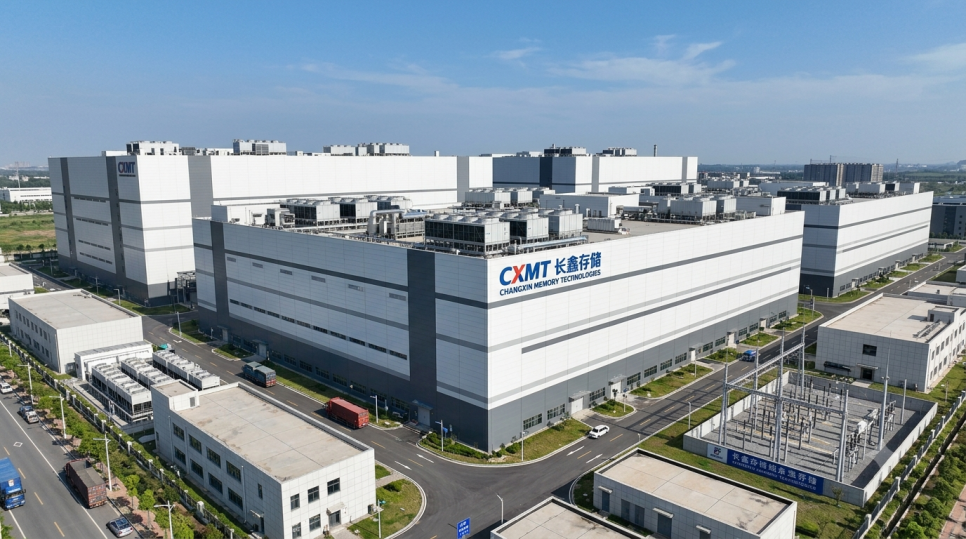

표지
한국 반도체를 사던
중국 돈이 돌아간다
6월 23일, 중국이 뒷문을 잠갔다. 규모는 735억 달러.
중국 자금 · 반도체 수급
중국이 6월 23일 해외 우회 투자 통로를 막았습니다. 신규만이 아니라 갱신까지 막힌 탓에, 만기가 돌아오는 대로 청산이 이어지고 있습니다.
6월 23일, 중국이 뒷문을 잠갔다. 규모는 735억 달러.
03–07중국 사모펀드는 자본통제 때문에 돈을 해외로 못 뺀다. 그래서 남의 이름으로 사는 계약을 썼다.
골드만삭스 같은 글로벌 IB가 자기 이름으로 SK하이닉스를 사서 들고, 오르내린 차익만 정산해준다.달러로 환전할 필요도 없다. 중국 안에 증거금만 걸어두면 해외 주식의 손익을 그대로 챙긴다.
08중국 증시와 부동산이 부진했다.
갈 곳 잃은 돈이 이 통로로 미국·일본·한국의 AI·반도체주에 몰렸다.
당국의 표현은 직설적이었다 — “고액자산가 자금이 대거 유출된 데 대한 직접 대응”.
09–11신규 계약 금지. 기존 계약 한도 증액 금지.
그리고 결정적으로 갱신(롤오버)까지 금지했다.신규와 갱신이 동시에 막히면 “한 번 나가면 다시는 못 들어오는” 구조가 된다. 이 한 줄이 뒤의 모든 일을 만든다.
16–21이 계약은 3개월짜리가 대부분이고, 계약 시점이 제각각이다.
6월 23일부터 9월 22일까지 만기가 순차적으로 돌아온다. 갱신이 막혔으니 만기가 오는 대로 기계적 청산.한꺼번에 터지는 사건이 아니라 석 달에 걸쳐 흐르는 물결에 가깝다.
22–247월 들어 AI·메모리주가 크게 빠졌다 → 평가손 증가 → 대규모 마진콜 → 강제 청산 → 주가 추가 하락.
청산이 하락을 부르고, 하락이 다시 청산을 부른다.
32–33브로커가 실제 들고 있던 주식을 팔면, 한국 시장에는 ‘외국인 매도’로 기록된다.
중국 투자자는 묶여 있던 국내 증거금이 풀려 중국 안에서 재투자가 가능해진다.외국인 매도라는 숫자만 봐서는 이 흐름이 안 보인다.
25–27, 34–35나가지 못한 자금과 청산으로 남은 돈이 7월 27일 상장한 CXMT의 IPO로 쏠렸다.
위안화 방어 · AI 육성 · 반도체 자립 · 증시 부양 — 중국은 이 넷이 다 필요했다.단순한 자본유출 방지가 아니라 자국 첨단산업으로 돈을 몰아주는 패키지였을 가능성.
글 첫 줄: “중국은 데이터로 확인하기 어려운 곳이라, 뇌피셜이 있는 점 감안 바랍니다.”
확인 안 되는 것 — 국적별 자금 흐름은 비공개다. 735억 달러 중 한국 종목 비중도 알 수 없다.한 줄 코멘트도 같은 톤이다. “이것으로 전체 주가를 설명할 수는 없고, 다양한 원인 중에 하나 정도로 보면 될 것 같음.”
7월 들어 국장이 빠지는 걸 두고 설명이 여럿 나왔습니다. 메르는 그중 잘 보이지 않는 통로 하나를 짚었습니다. 중국 돈이 한국 반도체주에서 빠져나가고 있다는 겁니다.
중국은 자본통제가 있어서 사모펀드가 돈을 해외로 마음대로 못 뺍니다. 그런데 중국 증시와 부동산은 부진한데 밖에서는 AI·반도체주가 날아가고 있었죠. 그래서 우회로를 씁니다.
방식은 이렇습니다. 골드만삭스 같은 글로벌 투자은행과 계약을 맺습니다. 투자은행이 자기 이름으로 SK하이닉스를 사서 들고 있고, 주가가 오르내린 차익만 중국 펀드와 정산합니다. 돈을 달러로 바꿔 내보낼 필요가 없어요. 중국 안에 증거금만 걸어두면 해외 주식의 손익을 그대로 가져가는 구조입니다. 이걸 TRS, 총수익스와프라고 부릅니다.
중국 증권감독당국이 증권사들에 구두로 지시를 내립니다. 신규 계약 금지, 기존 계약 한도 증액 금지. 여기까지는 흔한 규제입니다. 문제는 한 줄이 더 있었다는 겁니다. “기존 약정을 연장하지 말라.” 갱신까지 막은 거죠.
당국의 명분은 자본유출 방지와 위안화 방어였고, “미국·일본·한국 등 급등한 기술주로 고액자산가 자금이 대거 유출된 데 대한 직접 대응”이라는 발언으로 의도가 확인됐습니다.
이 계약은 만기가 짧습니다. 1개월, 3개월, 6개월짜리가 있는데 3개월이 대부분이고, 계속 갱신하면서 기간을 늘려가는 방식이었어요. 계약 시점이 제각각이니 만기도 제각각 돌아옵니다.
6월 23일부터 갱신이 막혔다면, 3개월짜리는 6월 23일부터 9월 22일 사이에 순차적으로 만기가 옵니다. 만기가 왔는데 갱신이 안 되면 선택지가 없습니다. 기계적으로 청산해야 하죠.
여기에 악순환이 붙습니다. 7월 들어 AI·메모리주가 크게 빠지면서 평가손이 커졌고, 대규모 마진콜이 발생했습니다. 강제 청산이 주가를 더 밀어내리고, 내려간 주가가 다시 마진콜을 부르는 식입니다.
브로커가 실제로 들고 있던 주식을 팔면, 우리 장에는 외국인 매도로 찍힙니다. 골드만삭스가 판 것으로 기록되죠. 중국 투자자는 담보로 묶여 있던 국내 증거금이 풀려서 중국 안에서 재투자할 수 있게 됩니다. 즉 외국인 매도라는 숫자만 봐서는 이 흐름의 정체가 안 보입니다.
7월 27일 상하이에 CXMT(창신메모리)가 상장했습니다. 나가지 못한 자금과 청산으로 남은 돈이 이 IPO로 쏠렸다는 겁니다. 중국은 지금 위안화 방어, AI 육성, 반도체 자립, 증시 부양이 전부 필요한 상황이죠. 그래서 이 규제가 단순한 자본유출 방지가 아니라 자국 첨단산업으로 돈을 몰아주는 정책 패키지의 일부였을 가능성이 있다는 게 메르의 해석입니다.

글 첫 줄이 “중국은 데이터로 확인하기 어려운 곳이라, 뇌피셜이 있는 점 감안 바랍니다”입니다. TRS는 국적별 자금 흐름이 공개되지 않고, 735억 달러 중 한국 종목 비중이 얼마인지도 알 수 없습니다.
한 줄 코멘트도 같은 톤입니다. “이것으로 전체 주가를 설명할 수는 없고, 다양한 원인 중에 하나 정도로 보면 될 것 같음.”